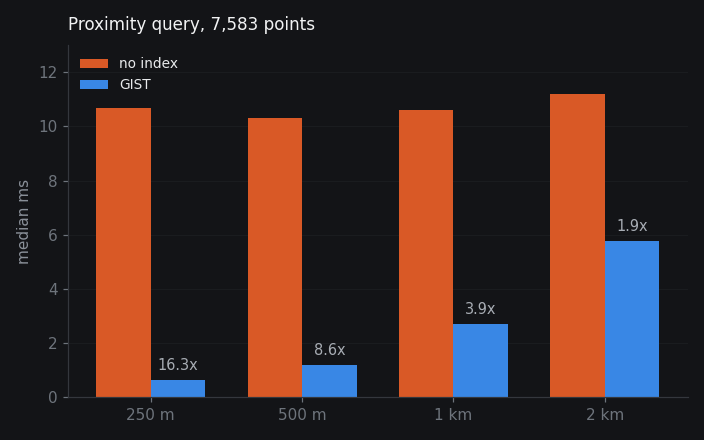

Every GIS tutorial says 'add a spatial index' but never measures what it actually costs or gains. This study builds a PostGIS API serving 7,583 Amsterdam POIs and benchmarks the GIST index across query radii from 250m to 2km. The result: 16x faster at small radii where the index rejects most rows, but only 1.9x at large radii where it barely helps, and nothing at all for two of three endpoint types.
GitHub ↗
ST_DWithin on projected geometry (EPSG:28992), median of 60 runs after 10 warm-up. Without the index every radius costs ~10.5 ms because PostgreSQL scans all 7,583 rows. With the GIST index, cost tracks result-set size: 0.65 ms at 250 m, 5.78 ms at 2 km.
| Radius | No index | GIST | Speedup | Rejected |
|---|
| Endpoint | No index | Indexed | Gain |
|---|---|---|---|
| Proximity, 250 m | 10.680 ms | 0.654 ms | 16.3x |
| Proximity, 500 m | 10.307 ms | 1.200 ms | 8.6x |
| Proximity, 1 km | 10.600 ms | 2.715 ms | 3.9x |
| Proximity, 2 km | 11.192 ms | 5.776 ms | 1.9x |
| Nearest by category | 1.121 ms | 0.992 ms | 1.1x |
| Polygon containment | 1.348 ms | 1.321 ms | 1.0x |
-- the proximity query being benchmarked SELECT name, category, ST_Distance(geog, ST_MakePoint(:lon,:lat)::geography) AS d FROM pois WHERE ST_DWithin(geog, ST_MakePoint(:lon,:lat)::geography, :radius) ORDER BY d LIMIT 20;
Click the map to move the query origin. Adjust the radius slider, the readout below shows interpolated benchmark times for indexed vs sequential scan at that radius, so you can see exactly where the index stops helping. POIs inside the radius are highlighted.
Three endpoints, thin handler. Geometry stays in SQL via ST_AsGeoJSON; Python only validates parameters and returns the FeatureCollection. Designed, not deployed.
| Endpoint | Pattern |
|---|---|
| GET /pois/nearby | ST_DWithin, EPSG:28992 |
| GET /facilities/nearest | category filter + distance sort |
| POST /stats/area | ST_Within, group by category |
# handler stays thin on purpose def nearby(event): lon, lat, r = validate(event["queryStringParameters"]) cur.execute(SQL_NEARBY, (lon, lat, lon, lat, r)) return { "statusCode": 200"headers": {"content-type": "application/geo+json"}, "body": cur.fetchone()[0], # already GeoJSON }